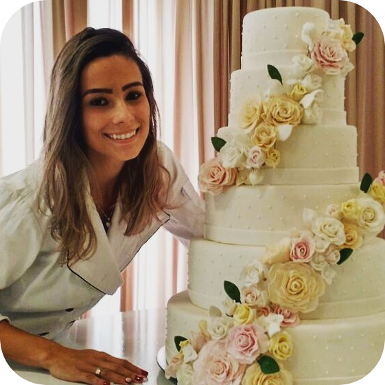

Daniella Britto
Formada em Gastronomia pela Univille. Daniella Britto encontrou no pâtisserie, sua forma de trasnformar amor em comida! e foi assim, que aos 20 anos de idade, Daniella lançava sua marca
Hoje, Daniella, conta com eventos até início de 2018
já agendados. Isso tudo, fruto de muito trabalho, dedicação e
perfeccionismo!
Com os Doces Finos Daniella Britto
seu evento será memorável